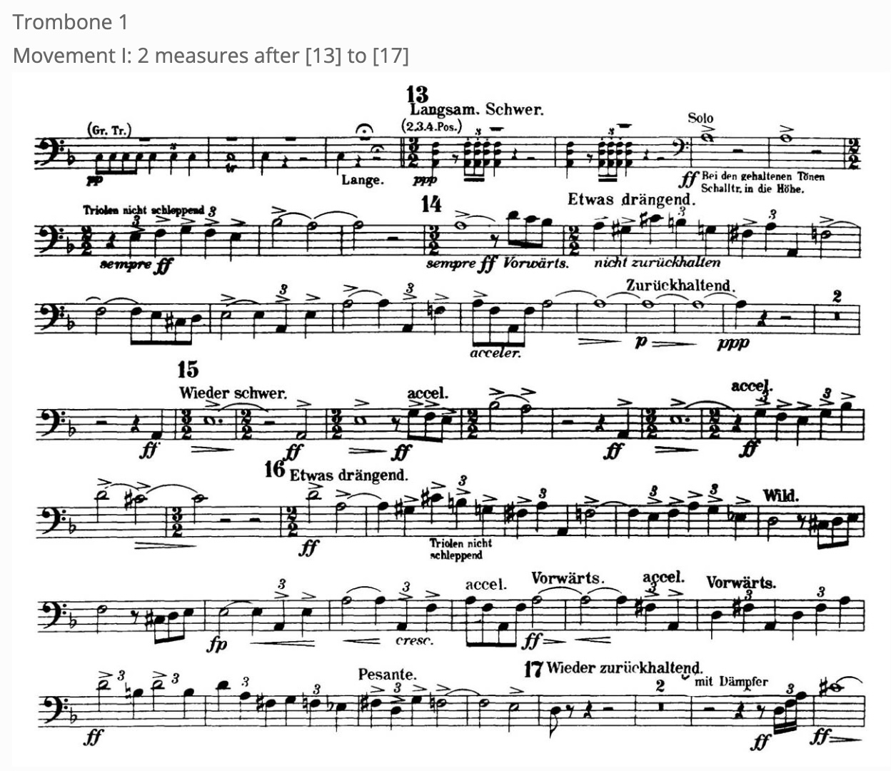

Mahler - Symphony No. 3
Advice
This is one of the most famous orchestral trombone solos of all time. Listen to as many recordings as possible to get the right idea. This one is all about your sound and style. It's a great opportunity to show off your orchestral trombone self. Definitely record yourself back and listen for any improvements. This one is one of my favorites, so enjoy the process of learning and playing it!
Resources
Excerpt Recording - Nathan Zgonc & Atlanta Symphony Orchestra
Excerpt Recording - Colin Williams & STS
Master class with Vienna Philharmonic Principal Trombone, Dietmar Küblböck - Carnegie Hall